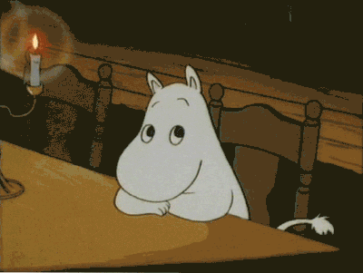

1. h1태그
heading의 약자인 h, 글자크기와 강조의 순서인 1~6까지의 숫자로 이루어진 코드
2. u태그
underline의 약자인 u, 밑줄을 긋는 태그로 사용된다
3. strong태그
강조를 뜻하는 태그, 사용시 굵게 표시된다
4. p태그
paragraph(단락)을 뜻하는 태그, 사용시 줄이 바뀐다.
5. br태그
단순히 줄바꿈을 사용하는 태그
6. img태그
image의 약자인 img,이미지를 집어넣는 태그,하지만 속성이 정해져있지 않기 때문에 작동하지 않는다.
7. scr태그
source의 약자인 scr,속성을 부여하는 태그이다.
위의 img태그와 결합하면
8. li태그
list의 약자인 li,html에서 목차를 표현하기 위해 사용하는 태그이다.
li태그는 보편적으로 부모와 자식같은 태그이다. 따라서 9번과 10번 태그를 같이 보자.
9. ul태그
unordered list(순서 없는 목록)의 약자인 ul,li태그로 생성된 목차가 다른 내용과 섞이지 않도록 분류해주는 태그
숫자나 분류과정이 없는 목차이다. 10번과 반대되는 성향
10. ol태그
ordered list(순서 있는 목록)의 약자인 ol,순서가 매겨지는 목차로 사용되는 태그
11. title태그
웹페이지에서 검색되는 웹 페이지의 이름을 정하는 태그
12. meta태그
이 웹이 어떻게 열릴것인지를 정해주는 태그, 웹의 구동방식을 정한다.
13. head태그
정리형 태그,14~16번과 연계됨,웹페이지의 정보 부분을 묶는 태그
14. body태그
정리형 태그,14~16번과 연꼐됨,웹페이지의 내용 부분을 묶는 태그
15. html태그
13,14번 태그를 묶는 태그. html을 표시하는 태그이다.
16. !doctype태그
웹페이지가 무엇으로 만들어졌는지를 표기하는 태그.